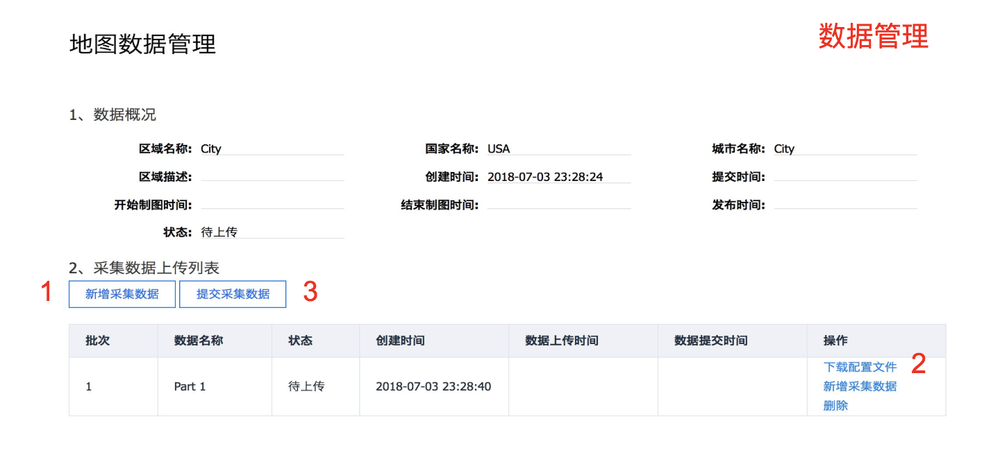

Apollo 2.5地图采集功能使用指南
本文档主要用来说明如何在Apollo2.5中使用地图数据采集的功能.重点介绍了数据采集所需的软硬件环境,数据采集的流程和注意事项.
软硬件环境准备
1、硬件安装方法参见Apollo 2.5硬件安装指南
2、软件安装方法参见Apollo 软件安装指南
3、传感器标定方法参见Apollo 传感器标定方法使用指南
4、NVMe SSD硬盘。为了解决由于IO瓶颈导致可能的数据丢帧问题，建议工控机中安装NVME SSD硬盘。
5、卫星基站。为了得到精确的制图结果，需要搭建卫星基站，并且保证整个采集过程中采集车的RTK可以正常工作。
数据采集流程
1、启动地图采集模式 Apollo环境启动参见Apollo 2.5快速上手指南
选择[Module Controller]、[Map Collection],打开[GPS]、[Camera]、[Velodyne]、[Velodyne16]开关。

确认各个传感器状态是否OK。

2、待确认各个传感器状态OK后，打开[Record Bag]开关，开始录制地图数据。

正式采集数据之前，需要车辆静止5分钟，8字绕行5分钟。 采集过程中需要保证双向车道全覆盖采集五圈以上，车速60KM/h以下，尽量每圈走不同的车道，覆盖完全。在路口区域无需刻意停留，慢速通过即可。路口区域需对各方向道路外延采集至少50m，保障道路各方向的红绿灯及车道线完整清晰。 数据采集完成后，需要8字绕行五分钟，然后再静止五分钟。
3、所有采集完成后，关闭[Record Bag]开关结束采集，然后关闭[GPS]、[Camera]、[Velodyne]、[Velodyne16]开关。

4、数据上传
采集的数据放置在/apollo/data/bag/(采集开始时间,例如2018-04-14-21-20-24)目录，把该目录下的数据打包为tar.gz压缩文件，到Apollo数据官网进行数据上传。
地图数据生产服务
1、数据权限申请
首先需要注册一个百度账号，登陆百度账号，申请地图制作服务使用权限(仅需申请一次),如果已经申请过，跳过此步。

2、地图技术服务
用户可以在该页面进行新建区域、创建制图任务、管理地图数据、跟踪制图进度，下载地图数据。

3、数据管理
用户点击“采集数据管理”后可以进入采集数据管理页面，在该页面可以上传多份采集数据，所有数据上传上传后可以提交采集数据，之后进入制图流程，不能再对数据进行编辑操作。

4、数据下载
当需求状态是"已发布"时，点击“下载地图”可进行地图数据下载。如果需要更新地图，请点击“更新地图数据”发起制图流程，需重新进行数据上传及制图流程。